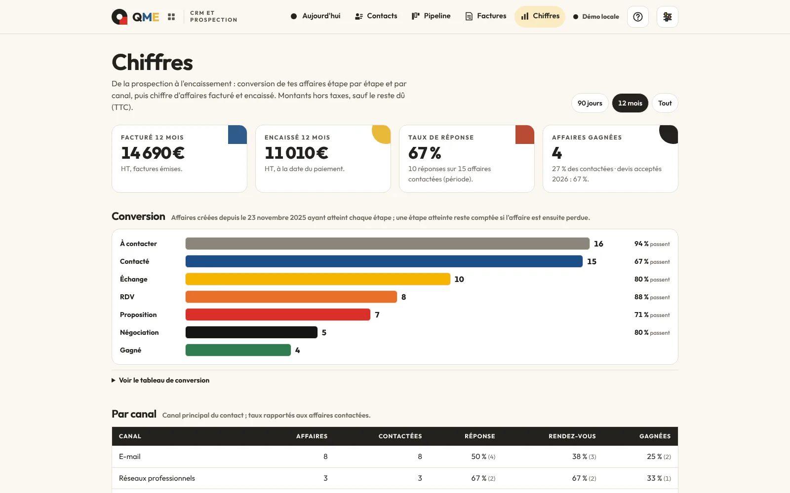

FRENCH INTERFACE · SAMPLE DATA

One screen.
Who to chase, in order.
5 follow-ups today.
2 already overdue.
€4,416 left to collect.
3 invoices.
Freelancers, every morning
Who do I
follow up
today?
Unpaid invoices and quiet leads get lost in the inbox.
FRENCH INTERFACE · SAMPLE DATA
One screen.
Who to chase, in order.
5 follow-ups today.
2 already overdue.
€4,416 left to collect.
3 invoices.
FRENCH INTERFACE · SAMPLE DATA

Then the year
at a glance.
Invoiced €14,690.
Collected €11,010.
Built around
how one freelancer
works.
Yours can follow
your own rules.
Want one built
for your clients?
Custom tools for freelancers and small businesses.
qm-engineering.fr/x